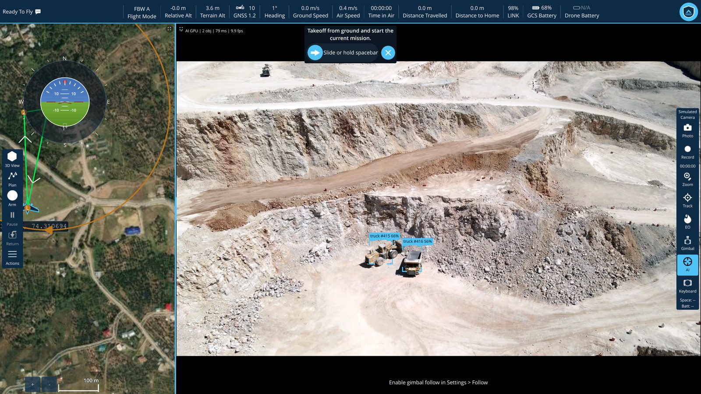
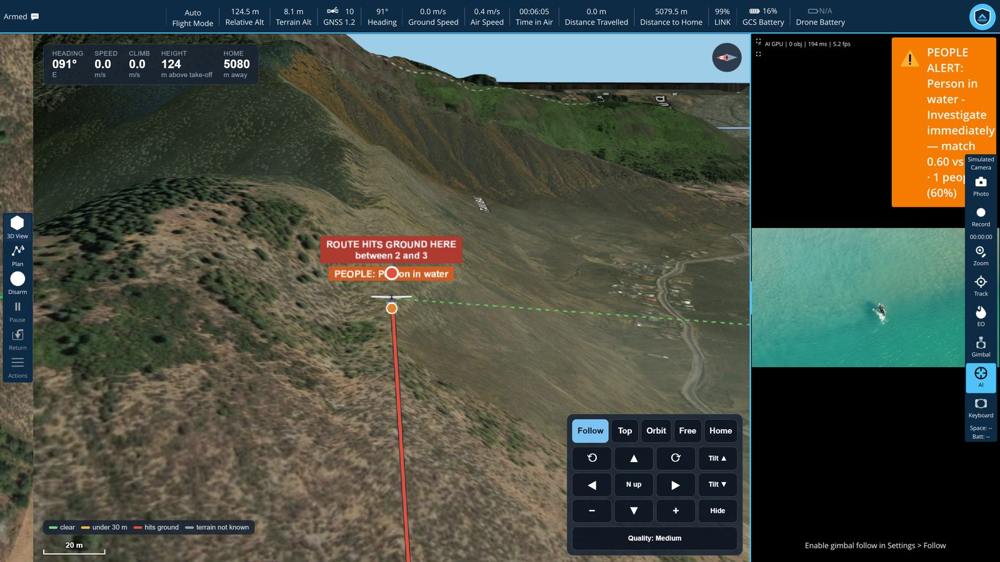
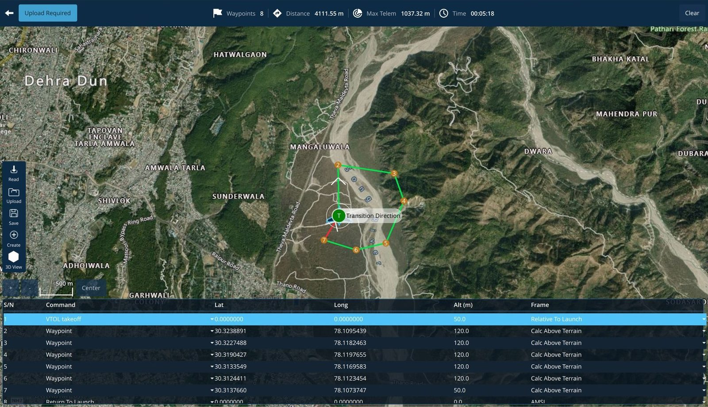
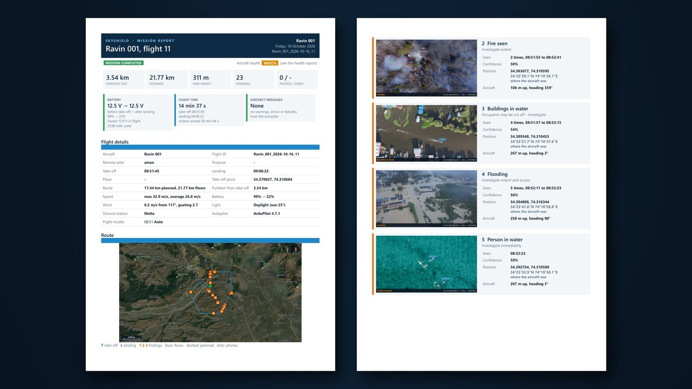
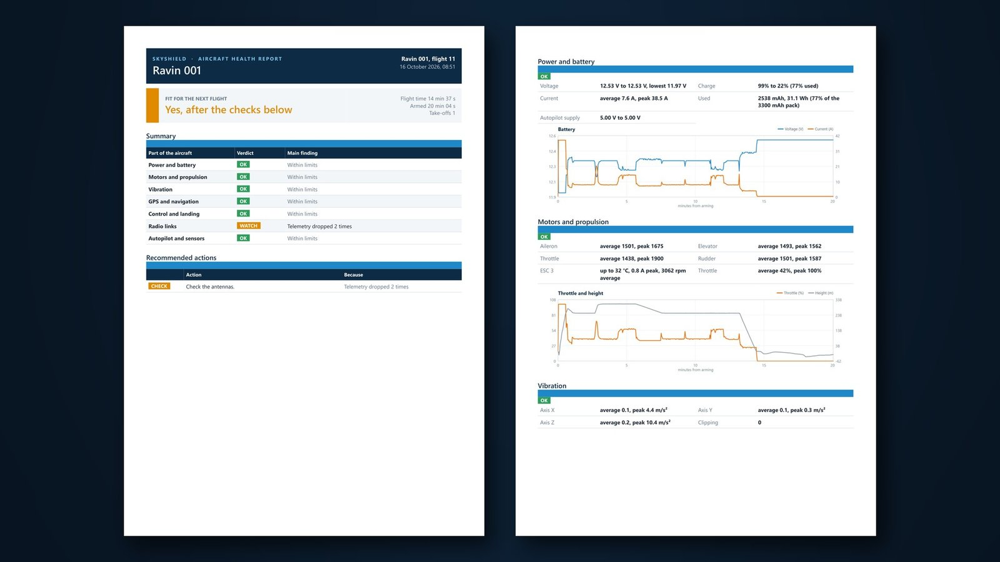
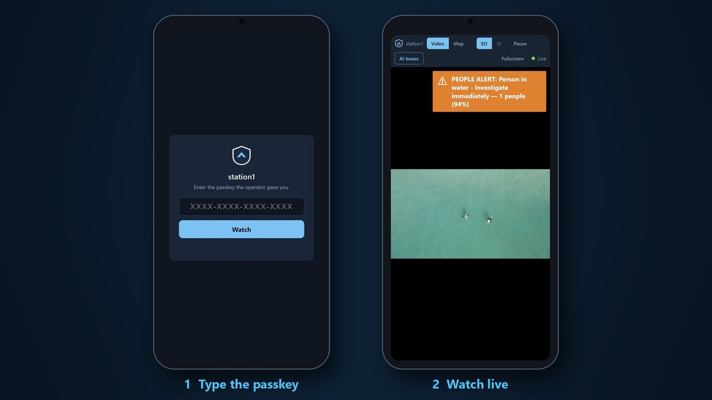
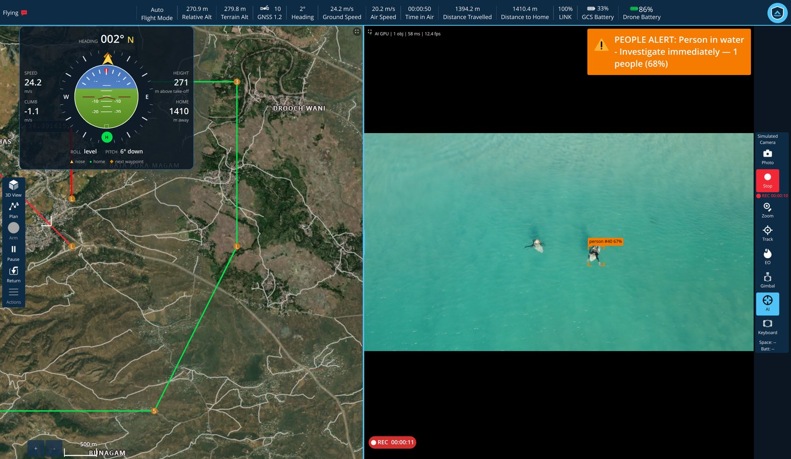

Find people before the water does
The AI names what it sees — person in water, people cut off by water, road under water — and the alert carries a picture and a position the field team can drive to. The control room watches live from a phone.
Rent the GCS
Rent SkyShield by the month and get the whole station from day one: missions checked against the terrain before take-off, AI that reads the scene and raises the alert, several aircraft from one screen, a flight report and an aircraft-health report written for you after every landing, and live video for anyone you choose — on site or anywhere in the world.
Showreel
Screen recordings from the shipping build — no mock-ups.
Who rents it
One station, set up for the job in front of you. These are the missions it was built around — and the features that carry each one.
The AI names what it sees — person in water, people cut off by water, road under water — and the alert carries a picture and a position the field team can drive to. The control room watches live from a phone.
Long patrols flown on a terrain-checked route; the station speaks every alert, so an operator is not glued to the video. Every finding is in the flight report at landing.
Fire and vehicles on fire are flagged on the live feed. Commanders anywhere follow the same picture over the internet with a passkey — no VPN, no app.
Repeat routes over changing ground, checked against the real terrain so a leg never clips the face. Photos and video logged with time and position.
Up to four aircraft on one screen, each with its own camera. Command them as a group, take any one in hand, and see every link and battery at a glance.
A clean mission report for the client and a separate health report for maintenance, written automatically at landing, with the route, the findings and the figures.
What you're renting
Real captures from the software you would be running. Not a rental build — the same station we fly ourselves, with every feature switched on.









How it works
How many stations, which aircraft, and what you are flying for. A price comes back the same day.
Windows 10 or 11. Video, maps, 3D and the AI are all in the one installer; the licence key unlocks the station for the term.
We help set up the aircraft and the first mission. Updates arrive by themselves for as long as the rental runs.
The terms
Against the machines you actually fly from, so a season's work costs a season rather than a purchase order.
The full station from the first day — nothing reserved for an edition above yours.
The station updates itself between flights, never with an aircraft connected.
Dehradun, the people who wrote it — not a ticket queue.
Everything in the licence
Planning through to post-flight reports, on every licence we issue. The rental is not a reduced build.
Connect
Pricing follows device count and term, so we quote it rather than print a figure that fits nobody. Send the fleet size and the work it's for, and a number comes back.